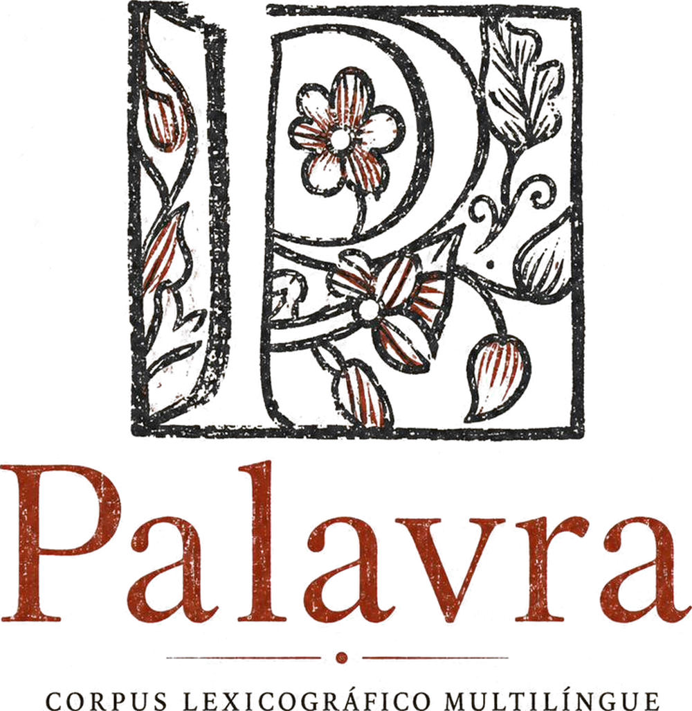

Corpus lexicográfico multilíngueCorpus lexicográfico multilingüeCorpus lexicographique multilingueMultilingual lexicographic corpus·pt · es · fr · en·1694 — 1890
do lat. parabŏla, do gr. παραβολή — literalmente, «pôr ao lado». Português, espanhol e francês nomeiam a palavra com um termo que significa comparação.
del lat. parabŏla, del gr. παραβολή — literalmente, «poner al lado». El portugués, el español y el francés nombran la palabra con un término que significa comparación.
du lat. parabŏla, du gr. παραβολή — littéralement, « mettre à côté ». Le portugais, l'espagnol et le français nomment tous le mot par un terme qui signifie comparaison.
from Lat. parabŏla, from Gr. παραβολή — literally, "to set side by side." Portuguese, Spanish and French all name the word with a term that means comparison.
- Base de dados de dicionários históricos das línguas portuguesa, espanhola, francesa e inglesa, estruturada verbete a verbete para consulta e análise computacional. Base de datos de diccionarios históricos en portugués, español, francés e inglés, estructurada entrada por entrada para consulta y análisis computacional. Base de données de dictionnaires historiques en portugais, espagnol, français et anglais, structurée entrée par entrée pour la consultation et l'analyse computationnelle. A database of historical dictionaries in Portuguese, Spanish, French and English, structured entry by entry for consultation and computational analysis.
- Instrumento de pesquisa em história conceitual. Os dicionários registram camadas de sentido sedimentadas ao longo do tempo — o que permanece, o que se desloca, o que desaparece. Instrumento de investigación en historia conceptual. Los diccionarios registran capas de sentido sedimentadas a lo largo del tiempo — lo que permanece, lo que se desplaza, lo que desaparece. Instrument de recherche en histoire conceptuelle. Les dictionnaires enregistrent des couches de sens sédimentées au fil du temps — ce qui demeure, ce qui se déplace, ce qui disparaît. A research instrument for conceptual history. Dictionaries record layers of meaning sedimented over time — what persists, what shifts, what disappears.
- Projeto em construção no Programa de Pós-Graduação em História da Universidade Federal de Santa Catarina. A interface de consulta será aberta ao público. Proyecto en construcción en el Programa de Posgrado en Historia de la Universidad Federal de Santa Catarina, Brasil. La interfaz de consulta será abierta al público. Projet en cours au Programme d'études supérieures en histoire de l'Université fédérale de Santa Catarina, Brésil. L'interface de consultation sera ouverte au public. A project under construction at the Graduate Program in History, Federal University of Santa Catarina, Brazil. The search interface will be open to the public.